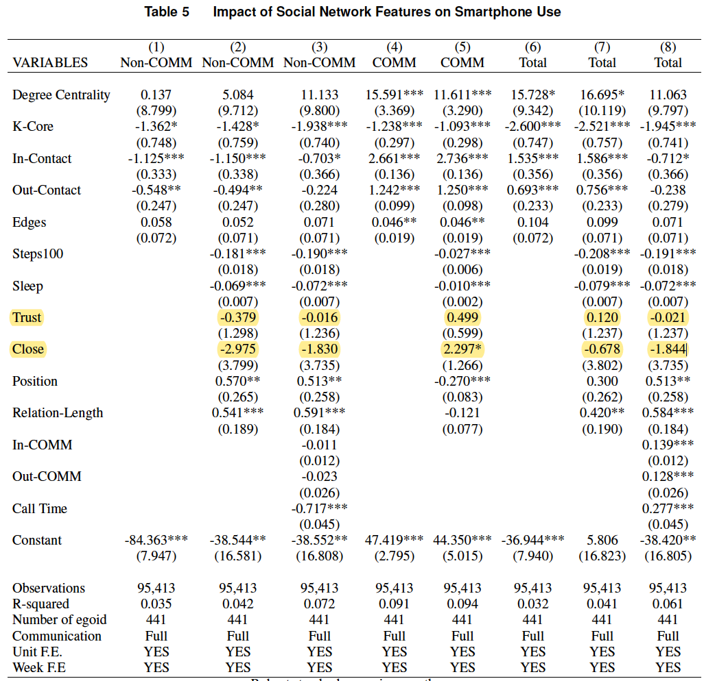
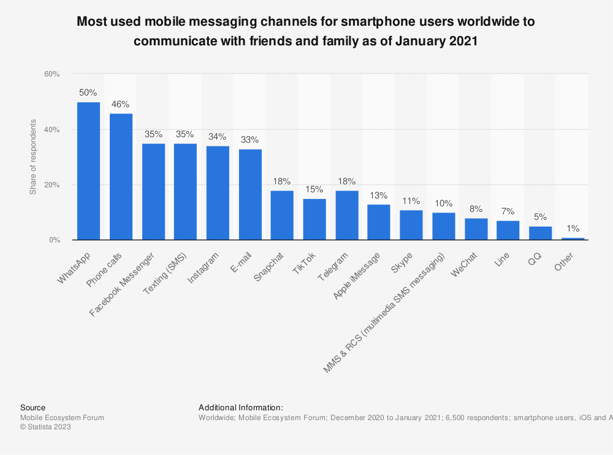

Thank you for your valuable comments and feedback.
| No. | Comments | Responses |
|---|---|---|
Thank you for your valuable comments and feedback.
| No. | Comments | Responses |
|---|---|---|
| 1 | It appears to be that those with higher core-number are mostly close friends. Then one could say that the story is actually much simpler: merely engaging with close friends is what matters. Can you argue for using network features, like core-number, against more intuitive metrics such as contact closeness in this context? | Thank you for your constructive comments. We measured the social distance of smartphone users with their contacts, as well as their level of trust in those contacts, which are the common measurement of interpersonal relationships. The estimation of the above two constructs suggest that they do not have significant impact on participants smartphone use behavior. Please refer to Table 5:  |
| 2 | A fundamental assumption is that social interactions mainly occur through calls and messages. Although the author has presented data showing a link between self-reported interaction levels and observed call/message frequencies, this doesn’t establish that calls/messages are the primary channels of interaction. People could have spent more time on other social platforms and offline activities (with the time spent also aligning with the self-reported interaction levels). How do you plan to address these potential unobserved interactions? Or can you justify they don’t affect your results? | This is an important issue that we need to address. Thanks for pointing this out. Indeed, there could be social engagements that are not based on phone call and message: 1) social interactions on other mobile applications; 2) physical interactions that are not based on phone call or messages. First, for the social interactions happening on other platforms, it is indeed unobservable in our data set. However, based on the market share of the most popular mobile messaging channels, our data covered the leading four channels (Whatsapp, Phone calls, Facebook messager and Texting (SMS): Therefore, we suppose that our data has covered the majority of mobile communication channels. Second, in terms of the unobserved offline social interactions, there could be two categories:
|
| 3 | The implications from your findings are also not clear. The current results show reduced smartphone use when engaging high “core-number” contacts. Does this suggest that one should have more interactions with such contacts to minimize their screen time? But the effect seems to be muted for the heaviest smartphone users, meaning this strategy wouldn’t be effective for those who might be really addicted. | |
| 4 | Does a single interaction by call/text suffice to trigger this effect? Can you provide more thoughts on the results? |
|
| 5 | It could be also interesting to explore how this effect vary by individual’s perceived loneliness, their social interaction level, or maybe the timing of activation (e.g., morning vs night), etc. | Day vs Night (after 5 p.m.) |
| 6 | Smartphone addiction is measured by duration of smartphone use. But certain usages like seeking information or connecting can be productive. Why not consider defining addiction as screentime over a certain threshold? | |
| 7 | “Activation” of a contact in a social media is determined by a single message or call. Shouldn’t the frequency of interactions be considered? Would a weighted average make more sense here? | |
| 8 | In Figure 5, you handle missing contact information by referencing from the past or future. How often does such missing information happen? Wouldn’t it be more appropriate to rely on the most recent survey only in order to capture the dynamic relationship? | |
| 9 | Following the above point, how did you handle new relationships that emerged between biannual surveys? | |
| 10 | Figure 7 exemplifies social network activation. I’m curious about the repeated communications with a few out-of-network contacts: are these inbound or outbound? If these are mostly inbound with no response or occurred at regular times, it might be more reasonable to classify them as potential ads/promotions and exclude them from analysis. | |
| 11 | Personality was included as a control. Shouldn’t it remain consistent for an individual? If so, you should drop it from the fixed-effect model. | |
| 12 | It’s not necessary to write three functions for total, communication, and non-communication screentime; the model is the same. | |
| 13 | Based on the # observations, the unit of analysis seems to be person-week, but in your model and results, “t” indicates day. Please clarify. | |
| 14 | Your hypothesis 3 is about perceived loneliness but the results are missing. What is the relationship between the perceived loneliness and one’s actual communication pattern? | |
| 15 | Please make the tables/figures self-explanatory. For example, in Table 6 it’s unclear which column corresponds to which subsample. In Table 4, please specify the units for each variable. |